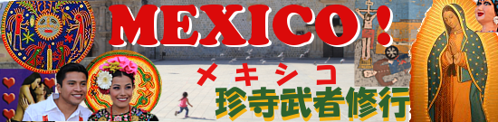

メキシコ珍寺武者修行
数年前、私は軽く悶々としていた。
珍寺求めて歩き続けた数十年。
私がこれまで精進してきた珍寺修行は果たして何かの成果を得たのだろうか？
何か意味があったのだろうか？
…もちろんそんな問いに意味などない。
こういう風に考えるのは大抵現状がオモシロくない時なのだろう。
ならば目先を変えて全然違う場所で私のやっている事、好きな事を実験的に逆照射してみよう、と思ったのだった。
で、直感的に思いついたのが
メキシコ
。
ド派手な色彩とフレンドリーなお国柄。そして調べてみるとオモシロそうなところがわんさかわんさか。
よし、メキシコで珍寺武者修行じゃ。
プロレスでも武者修行といえばメキシコだもんね。
…という訳で気が付けばメキシコ行きの機上の人になっていたわけなのさ。
題して
メキシコと言えばサボテンにソンブレロ帽にヒゲ親爺、といったイメージを持つ方がほとんどだろう。
ついでに治安悪いんでしょ？的なイメージ。
いや、間違っちゃいないが、それだけではない深い国なのですよ。
例えば宗教。
大航海時代にスペインに占領された歴史を持つこの国の宗教はカトリックが主流だ。
しかもスペインが歴史上一番イケイケな時期の建築様式であるバロック様式を
更にスペイン風味に煮しめたチュリゲラ様式
の教会が直輸入でバンバン建てられ、それらが現存しているのだ。
これらの教会建築を写真家の小野一郎氏は「ウルトラバロック」と称し、写真集を刊行している。
劇的な表現、過剰な装飾。そういったやりすぎ建築がメキシコには沢山あるのだ。コレを見ないテはない。
さらにマヤ・アステカ文明時代の古い信仰も現在でも息づいており、それらがカトリックと混ざり合い複雑な民間信仰シーンが展開されている。
特に気になったのが日本の絵馬にそっくりな
エクスヴォト
(ExVoto)という絵の奉納。
これが驚くほど絵馬にそっくりなのだが、題材が結構メキシコらしかったりする。
今回どこまでメキシコの信仰シーンに食い込めるかは未知数だが、基本的にはカトリックの教会訪問がベースとなろう。
更に付け足すと上手いトルティーヤに蒸留酒の王様テキーラやメスカル、更に上手いビールなどなど酒と飯も楽しみ。
早くも機上で飲み過ぎてメキシコ入りの時点でほろ酔い状態なのであった。
そんなカトリックと民間信仰が入り混じるメキシコの信仰世界に…
vamos!
（行くよ！）
オアハカ
/
OAXACA
オアハカ大聖堂 Catedral Metoropolitana de Oaxaca
聖母被昇天大聖堂 Basilica de Nuestra Senora de la Soledad
サントドミンゴ教会 Templo de Santo Domingo
トラコルーラ教会/Templo de Santa Maria de la Asuncion Tlacolula
メキシコシティ/CDMX
人形島/ソチミルコ La Isla de la Munecas/Xochimilco
グアダルーペ寺院 Basilica de Guadalupe
呪術市場 Mercado de Sonor
チャルマの大聖堂/チャルマ El Senor de Chalma /Chalma
以下作成中
2018.01.
珍寺大道場 HOME